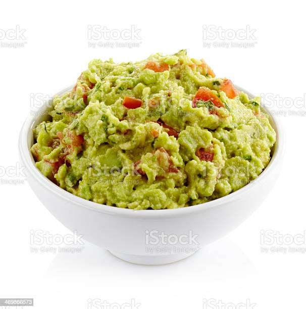

Rich, creamy guac with just the right amount of spice. A perfect blend of flavors.
- 1 small yellow onion, roughly chopped
- 1 serrano chili, roughly chopped
- 1/2 cup picked cilantro leaves, finely chopped, divided
- 2 teaspoons kosher salt
- 4 ripe avocados
- 2 tablespoons juice from 2 limes
Directions
- Place onion, chili, half of cilantro leaves, and salt in a mortar and pestle. Pound into a fine paste. Alternatively, combine onion, chili, half of cilantro, salt, and half of lime juice in a food processor or blender and process until smooth paste is formed, scraping down sides as necessary.
- Split each avocado in half, discard pits, and spoon out flesh into a medium bowl. Roughly mash with a stiff whisk. Add onion/chili puree, remaining cilantro leaves, and half of lime juice (if using mortar and pestle method). Fold to combine. Season to taste with more salt and lime juice. Serve immediately with warm tortilla chips.